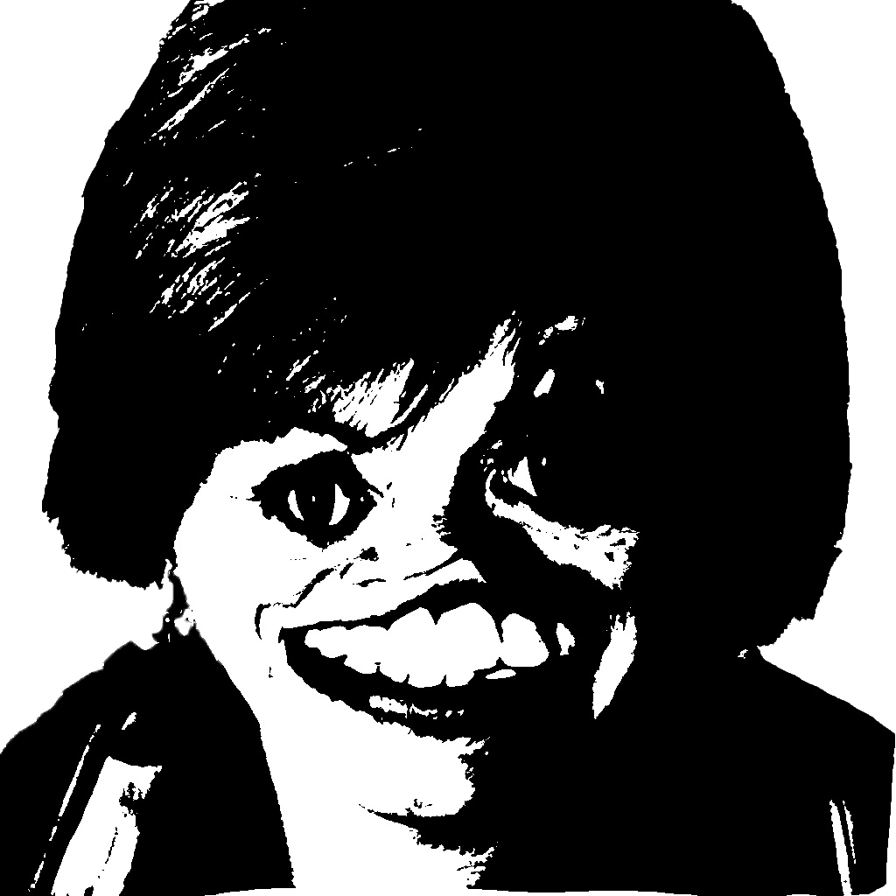

EL DISEÑO NO ES DECORACIÓN:
ES LA FORMA MÁS ELEGANTE DE LA INSATISFACCIÓN.
Diseñar es recordar que el mundo no está terminado. Es negarse a aceptar lo dado como definitivo, y ver en lo cotidiano un terreno fértil para la transformación. No se trata de embellecer lo que existe, sino de cuestionarlo, de desmontarlo y reconstruirlo con intención. En una época donde la rapidez se confunde con progreso y la eficiencia con sentido, el diseño propone una pausa: un espacio para preguntarnos no solo cómo se ve algo, sino por qué debe existir. Cada línea, cada forma, cada decisión, es una forma de diálogo con el futuro—una promesa de que aún es posible hacer del mundo un lugar más legible, más humano.
NOISE STUDIO MANIFESTO
En un mundo donde nos hemos obsesionado con el silencio, se hace cada vez más necesario que existan individuos que se atrevan a hacer ruido. Estos dos no son excluyentes, ya que el uno no puede existir sin el otro, y sin embargo, hemos antagonizado este último, convirtiéndolo en el gran villano de la vida moderna.

Sin el ruido, no existirían la música y los conciertos, no habría revoluciones y por lo tanto naciones libres, no tendríamos como festejar cuando estamos eufóricos ni como gritar cuando lo sentimos necesario. Al nacer, el ruido es lo primero que conocemos, chillamos calentando nuestras cuerdas bocales y nos comunicamos los meses siguientes con sonidos y gestos que no siempre tienen sentido.
El color es una sensación que se traduce en ondas, que se traducen en ruido. Una forma, una línea, una palabra, hacen ruido en un sustrato en blanco, que luego se ubica en un espacio donde incomoda y desconcentra. Hacemos ruido al caminar, al comer, al respirar, en nuestras casas cerrando puertas y moviendo sillas, rechazar el ruido es rechazarnos a nosotros mismos y lo que nos hace humanos.
Hay belleza en el ruido, así como hay orden en su aparente desorden. El silencio sin ruido es ser cómplice, es callar una historia que merece ser contada, es dejar que la vida sea vivida por otros. Sin ruido, no tenemos identidad, no lograríamos comunicarnos, no señalaríamos lo que nos parece injusto y lo que encontramos interesante.
Huir del ruido es perdernos, escapar del contexto que nos rodea y los elementos que lo construyen.
Queremos regresar el ruido a la cotidianidad, volverlo parte de nuestra rutina, reivindicar el espacio que ha tenido históricamente en la sociedad.
Hacemos ruido desde el diseño y la creación visual, hacemos ruido para que otros puedan hacer ruido,
Hacemos ruido para darle sentido al silencio.
HAY BELLEZA EN EL RUIDO, ASÍ COMO HAY ORDEN EN SU APARENTE DESORDEN.
ENCONTRAR
LO BELLO EN
LO TRIVIAL.
Vivimos en una era de lo excesivo.
Lo que no deslumbra, no cuenta.
Nos han enseñado a medir el valor
de las cosas por su tamaño, su
impacto, su ruido. Y en esa carrera
por lo grandioso, hemos perdido el
arte de mirar. Porque hay belleza
que no grita, que no ocupa espacio,
que no necesita escenario. Está
en lo ínfimo, en lo frágil, en lo que
sucede todos los días y por eso se
vuelve invisible.
Ver lo pequeño es casi un acto de
insurrección. Es nadar contra una
corriente que premia la distracción y
la inmediatez. Es detenerse cuando
todo empuja a avanzar. Es decir: “esto
que apenas se nota también merece
ser visto”. La sombra de una hoja
temblando en la pared. El sonido de
una respiración tranquila. La costura
imperfecta de una prenda hecha a
mano.
Pequeños mundos dentro del
mundo, que esperan sin exigir, que
existen sin pedir aplausos.
Hay una forma de sabiduría en
afinar la mirada para lo sutil. No se
trata de romantizar lo simple, sino
de comprender que lo esencial casi
nunca entra por los ojos de quienes
corren. Quien aprende a ver lo bello
en lo cotidiano desarrolla una mirada
menos ansiosa, más presente. Y en esa
presencia hay un tipo de libertad que
no se compra ni se enseña: se cultiva.
La belleza, entonces, no está en las
cosas, sino en la atención que les
damos. Es una cualidad que se revela
solo cuando dejamos de esperar que
el mundo nos impresione. Quizá por
eso lo pequeño incomoda a algunos:
porque exige sensibilidad, y esa no se
simula. Y es que, en tiempos donde
todo parece gritarnos qué admirar,
elegir ver lo que nadie mira es una
forma de decir que seguimos siendo
humanos.